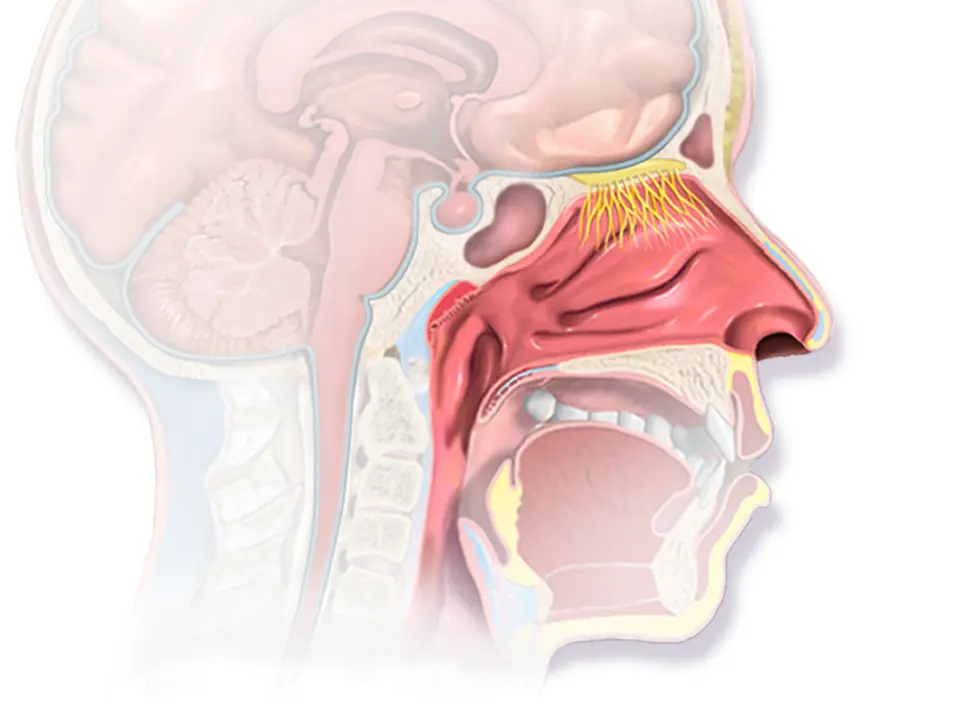
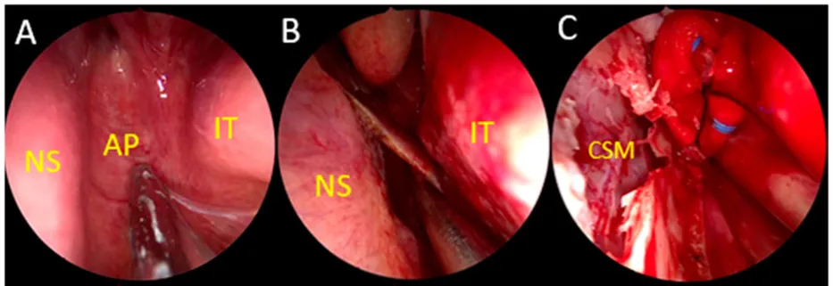
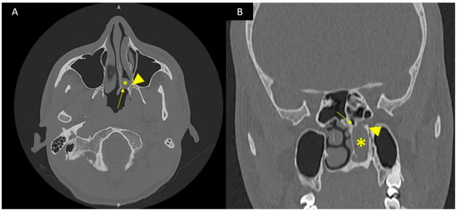
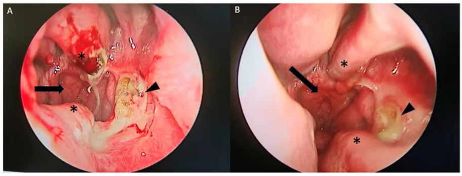

DX.9 — Atrésie des choanes 🚩 E1 (forme bilatérale)
Le nouveau-né qui bleuit au calme et rosit en pleurant peut avoir les deux choanes fermées, car il ne sait pas encore respirer par la boucheS1S3. Le médecin assure d’abord l’air par la bouche, confirme la plaque par la sonde, l’endoscopie et le scanner, recherche un syndrome associé, puis confie l’enfant au chirurgienS3S1. Les doses citées viennent de l’information professionnelle suisse (AIPS) de Swissmedic, et toute indication que l’AIPS ne couvre pas porte la mention « hors AIPS », sans dose.
Ce cours sur l’atrésie des choanes reprend les sources citées ; il n’a pas été validé cliniquement par un médecin.
1. Définition
L’atrésie des choanes est une obturation congénitale, osseuse, membraneuse ou mixte, de l’orifice postérieur d’une ou des deux fosses nasales, qui supprime leur communication avec le rhinopharynxS3S7.
2. Épidémiologie (Suisse, puis Europe)
Le Centre hospitalier universitaire vaudois (CHUV) décrit une malformation rare, dont la forme unilatérale échappe le plus souvent au diagnostic néonatalS1. Une série irlandaise chiffre l’incidence à 1 naissance vivante sur 7000, et les recommandations slovènes donnent une fourchette de 1 sur 5000 à 8000S5S3. Les chiffres utiles rassemblent les repères européens, puis la place dans la Phase A explique le rang 10 et le rang d’exclusion E1S3S5S7.
Chiffres utiles : Suisse, puis Europe
| Donnée | Valeur | Population, lieu, date | Source |
|---|---|---|---|
| Fréquence | Malformation rare | Nouveau-nés, CHUV, page du 26.02.2020 | S1 |
| Incidence | 1 naissance vivante sur 7000 | Série de Dublin, 2002–2009, publiée en 2012 | S5 |
| Incidence | 1 nouveau-né sur 5000 à 8000 | Recommandations nationales slovènes, 2023 | S3 |
| Règle des deux | Deux fois plus de filles, de formes droites et de formes unilatérales | Revue slovène, 2023 | S3 |
| Forme syndromique | Au moins la moitié des patients, surtout le syndrome CHARGE (colobome, cardiopathie, atrésie choanale, retard de croissance, anomalies génitales et des oreilles) | Revue slovène, 2023 | S3 |
| Atrésie dans le syndrome CHARGE | 36 à 65 % des cas, souvent bilatérale | Série de Padoue, 2021 | S8 |
| Formes bilatérales opérées | 12 sur 31 enfants | Série de Dublin, 2012 | S5 |
| Nature de la plaque | 54 % mixtes, 33 % membraneuses, 13 % osseuses | 24 patients, Bratislava, 2021 | S7 |
| Interventions par service | Médiane de 3 corrections par an | 116 services de 46 pays, dont 71 européens, 2026 | S4 |
Aucune source suisse lue ne chiffre l’incidence ; les chiffres viennent donc d’Irlande, de Slovénie et de Slovaquie, avec des fourchettes concordantesS5S3S7. La médiane de 3 interventions par an et par service montre la faible expérience individuelle, ce qui plaide pour un centre spécialiséS4.
Place de l’atrésie choanale dans la Phase A
| Repère | Valeur | Justification | Source |
|---|---|---|---|
| Rang de fréquence | 10, le dernier de la liste | Malformation rare | S1S5 |
| Rang d’exclusion | E1, le premier à exclure | La forme bilatérale menace la respiration dès la naissance | S1S3 |
| Âge typique | Nouveau-né pour la forme bilatérale | Diagnostic immédiat après la naissance | S1 |
| Âge typique | Enfant ou adulte pour la forme unilatérale | Écoulement et obstruction d’un seul côté | S3 |
Le rang 10 et le rang E1 ne se contredisent pas, car une cause rare mais vitale doit être écartée la première chez tout nouveau-né en détresseS1S3.
3. Physiopathologie
Pendant les premières semaines, le larynx reste haut dans le cou, si bien que le nouveau-né doit respirer par le nezS1. L’épiglotte au-dessus du voile et la langue collée au palais empêchent la respiration buccale, qui ne s’installe en général que vers six moisS3. Le tableau des mécanismes explique les signes par l’embryologie, puis la planche anatomique montre les choanes entre le nez et le pharynxS3S7S10.
Mécanismes et signes qui en découlent
| Mécanisme | Conséquence | Signe ou constat | Source |
|---|---|---|---|
| Trouble de l’embryogenèse vers la 4e semaine | Choane fermée par une plaque | Sonde qui bute au fond du nez | S3 |
| Quatre théories : membrane buccopharyngée, membrane de Hochstetter, crêtes neurales, mésoderme | Aucune ne fait l’unanimité | Plaque osseuse, mixte ou membraneuse | S3S7 |
| Médialisation de la paroi latérale et lame ptérygoïdienne médiale épaissie | Fosse nasale étroite | Rétrécissement visible au scanner | S3S7 |
| Partie postérieure du vomer épaissie | Cloison postérieure large | Vomer plus large dans les formes bilatérales | S7 |
| Respiration nasale obligatoire du nouveau-né | Asphyxie si les deux choanes sont fermées | Détresse dès la naissance ou à la première tétée | S1S3 |
| Cris : la bouche s’ouvre | L’air passe par la bouche | Cyanose cyclique, améliorée par les pleurs | S3 |
| Choane unique fermée | Le côté libre suffit | Écoulement unilatéral chronique, diagnostic tardif | S3S1 |
La carence en vitamine A et la prise de thyréostatiques pendant la grossesse figurent parmi les causes décrites, ce qui justifie de les rechercher à l’anamnèseS3.
Planche guidée : le carrefour nasopharyngé du nouveau-né
Coupe sagittale de la tête et du cou — Cette illustration en couleurs de BruceBlaus montre la fosse nasale, son débouché postérieur et la cavité buccale située juste en dessousS10.

Sur la version brute, le lecteur suit d’abord le trajet de l’air depuis la narine jusqu’au pharynxS10.
Les quatre cercles rouges de la copie annotée « coupe sagittale de la tête et du cou » ont été contrôlés par superposition sur l’image bruteS10.
- 1. Les choanes occupent l’extrémité postérieure de la fosse nasale ; la plaque atrétique se tend précisément à cet endroitS10S3.
- 2. La narine reçoit la sonde d’aspiration, qui bute à 3 à 3,5 cm lorsque la choane est ferméeS10S3.
- 3. La cavité buccale reste fermée par la langue chez le nouveau-né, d’où l’intérêt d’une tétine de McGovernS10S3.
- 4. L’oropharynx, sous le voile, devient la seule voie d’air lorsque la bouche est maintenue ouverteS10S3.
Ce que l’image décide. La planche montre pourquoi une choane fermée des deux côtés asphyxie le nouveau-né : l’air n’a plus de passage tant que la bouche reste closeS1S3.
4. Démarche diagnostique
Chez le nouveau-né en détresse, la démarche teste d’abord la perméabilité nasale, assure ensuite l’air par la bouche, puis confirme l’atrésie avant de chercher les malformations associéesS3. Le déroulé en huit étapes précise pour chaque étape l’outil, le seuil et la décision ; la forme unilatérale suit un chemin plus lentS3S1.
Démarche diagnostique en huit étapes
| Étape | Question | Outil | Décision | Source |
|---|---|---|---|---|
| 1 | Le nez laisse-t-il passer le liquide ? | Quelques gouttes de sérum physiologique dans chaque narine | Reflux par la narine : test positif de ce côté | S3 |
| 2 | Le nez laisse-t-il passer une sonde ? | Sonde d’aspiration de calibre 6 à 8 French | Arrêt à 3 à 3,5 cm : atrésie ou sténose choanale | S3S1 |
| 3 | L’air passe-t-il par la bouche ? | Tétine de McGovern, sonde gastrique | Échec : intubation trachéale | S3 |
| 4 | La plaque est-elle visible ? | Rhinoscopie, puis endoscopie souple ou rigide après anémisation | Plaque confirmée | S3S4 |
| 5 | Quelle est la nature de la plaque ? | Tomodensitométrie (TDM) en coupes de 2 à 5 mm après aspiration | Type osseux, mixte ou membraneux | S3 |
| 6 | Le cerveau et le cœur sont-ils atteints ? | Échographie transfontanellaire, avis cardiologique | Risque anesthésique évalué | S3 |
| 7 | Un syndrome est-il présent ? | Généticien, recherche d’un syndrome CHARGE | Bilan des malformations associées | S3S1 |
| 8 | L’audition et la déglutition sont-elles normales ? | Bilan audiovestibulaire, avis du phoniatre | Prise en charge associée | S3 |
Dans la forme unilatérale, la détresse manque presque toujours ; l’enfant consulte plus tard pour un écoulement et une obstruction d’un seul côtéS3. L’endoscopie suffit alors au diagnostic, et le scanner n’est demandé qu’avant l’opération pour limiter l’irradiationS3.
5. Anamnèse ciblée et drapeaux rouges
L’anamnèse recueille le déroulement de la naissance, les épisodes de cyanose, la tétée et les antécédents de grossesse, puis recherche une malformation déjà connueS3. La grille d’anamnèse interprète chaque réponse, alors que les drapeaux rouges imposent une conduite immédiateS3S1.
Grille d’anamnèse ciblée
| Question | Réponse évocatrice | Interprétation | Source |
|---|---|---|---|
| Comment respire l’enfant au repos ? | Cyanose qui cède quand il pleure | Cyanose cyclique d’obstruction nasale bilatérale | S3 |
| Comment se passe la tétée ? | Cyanose ou pauses pendant le repas | Obstruction nasale découverte à la première tétée | S3 |
| Le sommeil est-il calme ? | Ronflement, apnées, sommeil agité | Obstruction nasale du nourrisson | S3 |
| La croissance est-elle normale ? | Prise de poids insuffisante | Retentissement alimentaire | S3 |
| L’enfant a-t-il été intubé ? | Plusieurs échecs d’extubation | Atrésie démasquée à l’extubation | S3 |
| La grossesse a-t-elle exposé à un risque ? | Thyréostatiques ou carence en vitamine A | Facteurs décrits de l’atrésie | S3 |
| D’autres malformations sont-elles connues ? | Colobome, cardiopathie, anomalie des oreilles | Syndrome CHARGE à rechercher | S3S8 |
| Chez l’enfant plus âgé | Écoulement et obstruction d’un seul côté depuis toujours | Atrésie unilatérale, longtemps méconnue | S3S1 |
La cyanose cyclique, qui cède aux pleurs, constitue la réponse la plus évocatrice, car les cris ouvrent la bouche et contournent l’obstacleS3.
Drapeaux rouges : agir avant de confirmer
| Drapeau rouge | Diagnostic à craindre | Conduite immédiate | Source |
|---|---|---|---|
| Détresse respiratoire dès la naissance | Atrésie choanale bilatérale (E1) | Air par la bouche, transfert en soins intensifs de néonatologie | S3S1 |
| Cyanose aux tétées, apnées | Obstruction nasale bilatérale | Sonde gastrique, alimentation adaptée | S3 |
| Stridor ou tirage persistant après ouverture de la bouche | Laryngomalacie, sténose sous-glottique ou trachéomalacie associées | Exploration des voies aériennes | S3 |
| Colobome, souffle cardiaque, oreilles anormales | Syndrome CHARGE | Avis cardiologique et génétique avant l’anesthésie | S3S8 |
| Masse médiane du nez | Encéphalocèle ou gliome | Aspirer avant la TDM, imagerie dédiée | S3 |
L’atrésie bilatérale s’accompagne dans 34 % des cas d’une autre anomalie des voies respiratoires, si bien que la persistance de la détresse doit faire chercher plus basS3.
6. Examen physique ciblé, région par région
L’examen commence par la face, teste chaque narine, puis visualise la plaque ; il se termine par la recherche des malformations associéesS3. Chaque région a sa fenêtre : face, narines, fosses nasales, bouche et pharynx et yeux, oreilles et cœurS3S8. La planche endoscopique montre ensuite une plaque atrétique réelleS9.
Région 1 — Face et nez externe
| Geste | Ce qu’on cherche | Interprétation | Source |
|---|---|---|---|
| Inspecter la face | Asymétrie, fente, dysmorphie | Anomalie craniofaciale associée | S3 |
| Regarder la racine du nez | Masse médiane | Kyste dermoïde, gliome ou encéphalocèle | S3 |
| Observer la respiration | Tirage, battement des ailes, ronflement | Obstruction nasale | S3 |
L’examen de la face doit précéder tout geste endonasal, car une masse médiane change complètement la conduiteS3.
Région 2 — Narines : sérum, sonde et flux
| Test | Technique | Résultat et lecture | Source |
|---|---|---|---|
| Test au sérum | Quelques gouttes dans chaque narine | Le sérum ressort par la narine : obstruction de ce côté | S3 |
| Sonde d’aspiration | Calibre 6 à 8 French, poussée doucement | Arrêt à 1 à 2 cm : cloison ou cornet ; à 3 à 3,5 cm : choane | S3 |
| Sonde à la naissance | Aspiration de routine des sécrétions | Passage impossible : atrésie évoquée | S1 |
| Autres tests | Bleu de méthylène, coton, miroir, stéthoscope sans pavillon | Absence de flux ou de colorant dans le pharynx | S3 |
La profondeur d’arrêt de la sonde oriente déjà le diagnostic, puisque la choane se situe plus loin que la cloison et le cornetS3.
Région 3 — Fosses nasales : rhinoscopie et endoscopie
| Temps | Geste | Constat | Source |
|---|---|---|---|
| Préparation | Toilette, anémisation et anesthésie de contact | Muqueuse rétractée, sécrétions aspirées | S3 |
| Rhinoscopie antérieure | Lumière et spéculum adapté | Écarte une sténose antérieure ou de l’orifice piriforme | S3 |
| Endoscopie | Endoscope souple ou rigide | Plaque au fond de la fosse, sans lumière choanale | S3S4 |
| Pratique européenne | Endoscopie souple avant l’opération | 81 % des 116 services interrogés | S4 |
Les recommandations slovènes classent l’endoscopie comme recommandation forte, de niveau de preuve I et de grade AS3.
Région 4 — Bouche, palais et pharynx
| Geste | Ce qu’on cherche | Interprétation | Source |
|---|---|---|---|
| Ouvrir la bouche | Amélioration de la respiration | Obstacle nasal plutôt que laryngé | S3 |
| Placer une tétine de McGovern | Voie d’air buccale stable | Pont vers le diagnostic et la chirurgie | S3 |
| Examiner le palais | Fente palatine | Malformation craniofaciale associée | S3 |
| Écouter le cou | Stridor persistant | Anomalie laryngée ou trachéale associée | S3 |
Une détresse qui persiste malgré une bouche ouverte oriente vers une seconde lésion des voies aériennes, présente dans un tiers des formes bilatéralesS3.
Région 5 — Yeux, oreilles, cœur et organes génitaux
| Organe | Anomalie cherchée | Lettre du syndrome CHARGE | Source |
|---|---|---|---|
| Yeux | Colobome | C | S3S8 |
| Cœur | Malformation cardiaque | H | S3S8 |
| Choanes | Atrésie | A | S3 |
| Croissance et développement | Retard | R | S3 |
| Organes génitaux et voies urinaires | Hypoplasie ou anomalie | G | S3S8 |
| Oreilles | Malformation, surdité | E | S3S8 |
Les critères majeurs classiques réunissent atrésie choanale, colobome, oreilles caractéristiques et atteinte des nerfs crâniens ; certains auteurs y ajoutent le variant pathogène du gène CHD7 (chromodomain helicase DNA-binding protein 7)S8.
Planche guidée : la plaque atrétique à l’endoscope
Endoscopie d’une atrésie choanale gauche — Ces vues endoscopiques en couleurs d’une équipe grecque de Patras montrent la plaque atrétique, puis le premier temps de la correctionS9.

Le lecteur repère d’abord sur la vue A les trois étiquettes jaunes des auteurs : cloison, plaque et cornet inférieurS9.
Les quatre cercles rouges de la copie annotée « endoscopie d’une atrésie choanale gauche » ont été contrôlés par superposition sur l’image bruteS9.
- 1. La plaque atrétique bloque ainsi le fond de la fosse gauche, en dedans du cornet inférieur, sans aucune lumière vers le pharynxS9.
- 2. La cloison nasale borde la plaque en dedans ; sa partie postérieure sera réséquée pour créer une choane uniqueS9S3.
- 3. Le cornet inférieur forme la limite latérale du champ opératoireS9.
- 4. Sur la vue B, le chirurgien soulève un lambeau de muqueuse septale qui recouvrira l’os à nu et préviendra la resténoseS9S3.
Ce que l’image décide. L’image confirme l’atrésie lorsque l’endoscope bute sur une paroi sans orifice, là où une choane normale laisserait voir le rhinopharynxS3S9.
7. Approche syndromique
L’inflammation reste la cause la plus fréquente d’obstruction nasale du nourrisson, alors que les malformations, rares, causent souvent une détresse respiratoireS3. Le tableau des voisins suit l’ordre de la liste gelée, et les autres causes néonatales complètent le diagnostic différentiel du nouveau-néS3.
Diagnostics voisins dans l’ordre de la liste gelée
| DX | Diagnostic | Ce qui le distingue de l’atrésie | Examen qui tranche | Source |
|---|---|---|---|---|
| DX.1 | Rhinite allergique | Gonflement muqueux d’origine allergique, gêne variable | Anamnèse, sonde qui passe | S2S3 |
| DX.2 | Rhinite virale aiguë | Inflammation, cause la plus fréquente chez le nourrisson, rarement menaçante | Sonde qui passe | S3 |
| DX.3 | Rhinite médicamenteuse | Médicament pris par la mère ou par l’enfant | Anamnèse | S3 |
| DX.4 | Déviation de la cloison | Sonde arrêtée à 1 à 2 cm de la narine | Rhinoscopie, endoscopie | S3 |
| DX.5 | Rhinosinusite chronique avec polypes | Écoulement unilatéral qui peut imiter une atrésie unilatérale | Endoscopie | S3 |
| DX.6 | Hypertrophie adénoïdienne | Enfant d’âge préscolaire, végétations dans le rhinopharynx | Endoscopie du rhinopharynx | S11 |
| DX.7 | Corps étranger nasal | Écoulement unilatéral qui imite l’atrésie unilatérale | Endoscopie, extraction | S3 |
| DX.8 | Hématome de la cloison | Cause traumatique, avec fracture ou luxation possible de la cloison | Rhinoscopie | S3 |
| DX.9 | Atrésie des choanes | Sonde arrêtée à 3 à 3,5 cm, plaque sans orifice | Endoscopie, TDM | S3 |
| DX.10 | Tumeur maligne nasosinusienne | Masse tumorale, parfois congénitale chez le nourrisson | Endoscopie, imagerie | S3 |
Chez l’enfant plus âgé, l’atrésie unilatérale se confond surtout avec la rhinosinusite chronique et le corps étranger, puisque tous trois donnent un écoulement d’un seul côtéS3.
Autres causes d’obstruction nasale néonatale, hors liste
| Famille | Exemples | Indice | Source |
|---|---|---|---|
| Anomalies anatomiques congénitales | Sténose de l’orifice piriforme, sténose nasale antérieure ou médiane | Sonde arrêtée tôt, scanner | S3 |
| Masses médianes | Kyste dermoïde, gliome, méningo-encéphalocèle | Masse de la racine du nez | S3 |
| Kystes | Dacryocystocèle, kyste du canal incisif, mucocèle | Tuméfaction visible à l’endoscopie | S3 |
| Tumeurs congénitales | Hémangiome, tératome, rhabdomyosarcome | Masse progressive | S3 |
| Atteintes acquises | Inflammation, traumatisme, corps étranger | Contexte et évolution | S3 |
Ce tableau rappelle qu’une sonde arrêtée ne signe pas à elle seule l’atrésie ; l’endoscopie et le scanner précisent l’obstacleS3.
8. Diagnostic positif et critères
Le diagnostic positif repose sur une plaque vue à l’endoscopie au fond d’une fosse dont la sonde ne franchit pas l’extrémité, puis sur la tomodensitométrie qui la caractériseS3S6. Les critères et la classification donnent les éléments que le compte rendu doit préciserS3S7.
Critères du diagnostic positif
| Critère | Constat | Valeur | Source |
|---|---|---|---|
| Clinique | Test au sérum et sonde positifs | Arrêt à 3 à 3,5 cm de la narine | S3 |
| Endoscopique | Plaque sans lumière au fond de la fosse | Recommandation forte | S3S6 |
| Radiologique | TDM confirmant la plaque et son type | Coupes de 2 à 5 mm | S3S6 |
| Associé | Vomer postérieur épaissi, paroi latérale médialisée | Constat typique au scanner | S7 |
Le consensus international de l’International Pediatric Otolaryngology Group (IPOG), dont les centres ne sont pas tous européens, recommande lui aussi l’endoscopie et le scannerS6.
Classification à écrire dans le compte rendu
| Axe | Catégories | Repère chiffré | Source |
|---|---|---|---|
| Côté | Unilatérale ou bilatérale | Unilatérale deux fois plus fréquente | S3 |
| Côté atteint | Droite ou gauche | Droite deux fois plus fréquente | S3 |
| Nature | Osseuse, mixte ou membraneuse | 54 %, 33 % et 13 % selon la série de Bratislava | S7 |
| Nature selon Kwong | Osseuse ou mixte | 29 % et 71 % sur 63 patients | S7 |
| Étendue | Complète ou partielle | Partielle : sténose choanale | S3S7 |
| Contexte | Isolée ou syndromique | Au moins la moitié syndromique | S3 |
La vieille règle de 90 % de formes osseuses ne tient plus, car les séries récentes trouvent surtout des plaques mixtesS7.
9. Examens complémentaires
Les examens confirment la plaque, puis préparent l’opération et recherchent les atteintes associées qui conditionnent l’anesthésieS3. Le tableau des examens ciblés donne l’indication et la conduite ; l’interprétation chiffrée du scanner fournit les normes, et la planche tomodensitométrique montre une atrésie réelleS3S7S9.
Examens ciblés : indication, seuil, interprétation, conduite
| Examen | Indication | Seuil ou lecture | Conduite | Source |
|---|---|---|---|---|
| Test au sérum puis sonde de 6 à 8 French | Toute détresse respiratoire néonatale | Arrêt à 3 à 3,5 cm | Air par la bouche, avis de l’oto-rhino-laryngologiste (ORL) | S3 |
| Endoscopie souple ou rigide | Toute suspicion | Plaque sans orifice | Confirmer, puis TDM | S3 |
| TDM de la face et de la base du crâne | Chaque forme bilatérale | Coupes de 2 à 5 mm, aspiration préalable | Planifier la chirurgie | S3 |
| TDM avant chirurgie unilatérale | Forme unilatérale cliniquement claire | Seulement avant l’opération | Limiter l’irradiation | S3S4 |
| Échographie transfontanellaire | Forme bilatérale, surtout chez le prématuré | Atteinte du système nerveux central | Adapter la chirurgie | S3 |
| Avis cardiologique | Forme bilatérale avant l’anesthésie | Cardiopathie | Évaluer le risque opératoire | S3 |
| Consultation génétique | Forme bilatérale ou suspicion de syndrome | Syndrome CHARGE ou autre | Bilan familial | S3S4 |
| Bilan audiovestibulaire | Toutes les formes | Surdité, épanchement | Aérateurs ou appareillage | S3S4 |
| Imagerie par résonance magnétique (IRM) | Anatomie complexe, masse associée | Alternative sans irradiation | Cas choisis | S4 |
Le bilan auditif reste peu pratiqué, puisque 19 % seulement des services réalisent une tympanométrie avant l’opération, alors qu’il est recommandéS4. Le mucus non aspiré peut simuler une lésion des tissus mous, par exemple une encéphalocèle ; l’aspiration précède donc toujours le scannerS3.
Interprétation chiffrée du scanner
| Mesure | Norme rapportée | Constat dans l’atrésie | Source |
|---|---|---|---|
| Vomer postéro-inférieur avant 2 ans | 2,3 mm ou moins | Épaissi, souvent au-delà de 2 écarts-types | S7 |
| Épaisseur moyenne du vomer | 2,3 mm avant 8 ans ; 2,8 mm de 8 à 20 ans | Supérieure à la norme | S7 |
| Choane avant 2 ans | 3,7 mm ou plus | Réduite ou absente | S7 |
| Épaisseur d’une plaque osseuse | — | De 1 à 12 mm | S7 |
| Vomer et côté | — | Plus large dans les formes bilatérales que dans les unilatérales | S7 |
Ces normes proviennent d’auteurs repris par la série de Bratislava ; elles aident à mesurer l’épaississement du vomer, que le chirurgien devra réséquerS7.
Planche guidée : l’atrésie en tomodensitométrie
Tomodensitométrie d’une atrésie choanale gauche — Ces coupes axiale et frontale de l’équipe de Patras montrent une plaque mixte qui ferme la choane gauche d’un jeune adulteS9.

Le lecteur compare d’abord sur la coupe A la choane droite, aérée et noire, avec la choane gauche, fermée et griseS9.
Les quatre cercles rouges de la copie annotée « tomodensitométrie d’une atrésie choanale gauche » ont été contrôlés par superposition sur l’image bruteS9.
- 1. La plaque atrétique mixte ferme la choane gauche, si bien que des sécrétions retenues remplissent la fosse en amontS9.
- 2. La lame ptérygoïdienne médiale gauche, épaissie et bombée en dedans, rétrécit encore le passageS9S7.
- 3. Sur la coupe frontale, la partie postérieure du vomer apparaît nettement épaissieS9S7.
- 4. L’astérisque montre l’étendue verticale de l’atrésie, du haut vers le bas de la choaneS9.
Ce que l’image décide. Le scanner décide de la stratégie opératoire, car il montre l’épaisseur osseuse et la part du vomer à réséquerS3S7.
10. Arbre décisionnel
L’arbre décisionnel commence par la sécurité de l’air, car le diagnostic précis peut attendre quelques heures, mais l’oxygénation nonS3. L’arbre en huit nœuds conduit du nouveau-né cyanosé jusqu’au calendrier opératoire, puis rejoint la forme unilatéraleS3S1.
Arbre décisionnel en huit nœuds
- Un nouveau-né en détresse reçoit d’abord un test au sérum, puis une sonde de 6 à 8 French dans chaque narineS3.
- Une sonde arrêtée des deux côtés impose d’ouvrir la bouche par une tétine de McGovern et de poser une sonde gastriqueS3.
- Si la tétine ne suffit pas, l’équipe procède à une intubation trachéaleS3.
- Le nouveau-né rejoint ensuite les soins intensifs de néonatologie, où le néonatologue, l’ORL et le généticien l’évaluentS1.
- L’endoscopie, puis le scanner en coupes fines, confirment l’atrésie et son typeS3.
- L’échographie cérébrale et l’avis cardiologique vérifient que l’anesthésie générale reste sûreS3.
- La forme bilatérale est opérée entre le 10e et le 13e jour selon les recommandations slovènes, dès que l’anesthésie est possible selon le CHUVS3S1.
- La forme unilatérale est opérée après six mois, vers 6 à 12 mois, sauf détresse respiratoire ou difficultés alimentaires gravesS3S1S6.
La trachéotomie n’entre dans l’arbre que si une ventilation mécanique prolongée est prévue, par exemple en cas de maladie cardiaque ou neurologique associéeS3.
11. Prise en charge selon les recommandations suisses
11.A — But. Le traitement vise d’abord à garantir l’air, puis à ouvrir durablement les choanes, afin que l’enfant respire et s’alimente sans pauseS3S1. Il cherche aussi à prévenir la resténose et à dépister les atteintes associées, notamment l’auditionS3S4.
11.B — Moyens. Les moyens associent d’abord la voie d’air buccale d’urgence, la choanoplastie endoscopique par voie nasale et des soins locaux postopératoiresS3. La prise en charge d’urgence, la chirurgie et le traitement structuré détaillent chaque moyen, avec ses doses ou la mention hors AIPSS3S1AIPS 43838.
Urgence néonatale : assurer l’air avant tout
| Temps | Geste | But | Critère d’échec | Source |
|---|---|---|---|---|
| Immédiat | Tétine de McGovern dans la bouche | Voie d’air buccale | Détresse persistante | S3 |
| Immédiat | Sonde gastrique à côté ou à travers la tétine | Alimenter sans asphyxie | Cyanose aux repas | S3 |
| Si échec | Intubation trachéale | Ventilation sûre | — | S3 |
| Après la salle d’accouchement | Transfert en soins intensifs de néonatologie | Surveillance continue | — | S1 |
| Exceptionnel | Trachéotomie | Ventilation prolongée prévue | Réservée aux atteintes associées lourdes | S3 |
La seule solution définitive pour un enfant qui respire seul reste toutefois de rendre le nez perméable le plus tôt possibleS3.
Chirurgie : moment, technique, prothèses
| Rubrique | Recommandation | Force ou chiffre | Source |
|---|---|---|---|
| Moment, forme bilatérale | Entre le 10e et le 13e jour, même chez le prématuré | Recommandation forte | S3 |
| Moment, forme bilatérale au CHUV | Dès que l’anesthésie générale est possible ; intervention de 45 à 50 minutes | Pratique lausannoise | S1 |
| Moment, forme unilatérale | Après 6 mois, idéalement avant 12 mois | Consensus IPOG et Slovénie | S3S6S4 |
| Technique de référence | Choanoplastie endoscopique transnasale | Recommandation forte, 81 % des services | S3S4 |
| Geste clé | Résection du vomer postérieur, lambeaux muqueux | Vomer réséqué dans 57 % des services | S3S4 |
| À éviter | Résection transpalatine en première intention | Recommandation contre | S3 |
| Prothèses nasales | Ni recommandées ni déconseillées ; ablation dans les 7 jours si posées | Évitées au CHUV sauf certains syndromes CHARGE | S3S1 |
| Mitomycine C | Non recommandée | Effet non démontré, cancérogénicité possible | S3S5 |
| Prématuré | Perforation transnasale sous contrôle endoscopique | Reprise souvent nécessaire plus tard | S3 |
La choanoplastie retire la plaque et la partie postérieure de la cloison, ce qui crée une choane unique bien plus largeS3.
Traitement structuré : molécule, dose AIPS, durée, contrôle, échec
| Moyen | Molécule | Dose | Durée | Contrôle | Critère d’échec | Source |
|---|---|---|---|---|---|---|
| Lavage du nez | Sérum physiologique en gouttes | Par exemple 3 gouttes, 5 fois par jour dans chaque narine, à côté de la prothèse | Deux mois | Perméabilité, croûtes | Obstruction par les sécrétions | S3S1 |
| Anti-inflammatoire local | Glucocorticoïde nasal en gouttes, par exemple fluticasone | Hors AIPS chez le nourrisson opéré : aucune dose indiquée | Deux mois | Granulations | Granulations, resténose | S3 |
| Protection contre le reflux | Inhibiteur de la pompe à protons, par exemple ésoméprazole | Hors AIPS dans cette indication : aucune dose indiquée | Deux mois | Lait dans le rhinopharynx | Cicatrisation retardée | S3 |
| Infection locale | Gouttes antibiotiques | Hors AIPS dans cette indication : aucune dose indiquée | Première semaine ou écoulement purulent | Écoulement | Écoulement purulent persistant | S3S4 |
| Douleur | Paracétamol (Dafalgan® enfant, sirop) | 15 mg par kg par prise, 3 (à 4) prises par jour, au maximum 75 mg par kg et par jourAIPS 43838 | Aussi court que possible | Douleur, alimentation | Douleur non contrôlée | AIPS 43838S1 |
| Antibiotique général | Aucune recommandation claire | Non systématique | — | — | — | S4 |
Les recommandations slovènes citent des doses d’ésoméprazole et de fluticasone, mais leur usage chez le nourrisson opéré reste hors AIPS ; ce cours ne les reprend donc pasS3. L’enquête européenne montre que 77 % des services prescrivent des lavages salés et 37 % un corticoïde local, souvent jusqu’à huit semainesS4.
La monographie du paracétamol reprend mot pour mot les contre-indications, la grossesse et l’allaitement, utiles pour la mère qui allaiteAIPS 43838.
Monographie — paracétamol (Dafalgan® enfant, sirop)
| Indication AIPS | Les douleurs d’intensité faible à modérée et le traitement symptomatique de la fièvreAIPS 43838. |
|---|---|
| Dose AIPS | Une dose unique de 15 mg par kg, au plus 3 (à 4) fois par jour, avec 6 à 8 heures entre les prises ; la pipette est graduée dès 3 kgAIPS 43838. |
| Maximum AIPS | Le dosage quotidien ne doit pas excéder 75 mg par kg de poids corporelAIPS 43838. |
| Nouveau-né | L’AIPS signale une demi-vie plus longue chez le nouveau-né, et un risque d’effets indésirables graves du propylèneglycol associé à l’éthanolAIPS 43838. |
| Contre-indications | « Hyperbilirubinémie constitutionnelle héréditaire (maladie de Gilbert) », avec l’hypersensibilité au paracétamol et les troubles hépatiques gravesAIPS 43838. |
| Grossesse | « En cas de nécessité clinique, le paracétamol peut être pris ou utilisé pendant la grossesse »AIPS 43838. |
| Allaitement | « Le paracétamol passe dans le lait maternel »AIPS 43838, et l’AIPS demande la prudence pendant l’allaitement. |
| Mise à jour | Septembre 2025AIPS 43838. |
11.C — Surveillance. La surveillance contrôle ensuite la perméabilité de la nouvelle choane par l’endoscopie, sans imagerie systématique, pendant au moins un à deux ansS3S6. Le calendrier daté et les consignes aux parents précisent les rendez-vous et les signes d’alerteS3S1.
Calendrier de surveillance daté
| Moment | Sans prothèse | Avec prothèse | Source |
|---|---|---|---|
| Jour 1 | Respiration bouche fermée, tétée sans pause | Aspiration régulière des prothèses | S3 |
| Jours 2 et suivants | Sortie possible dès le 2e jour | Sortie vers la 2e semaine | S3 |
| Semaines 1 et 2 | Endoscopie à 1 et 2 semaines | Changement endoscopique plusieurs fois par semaine | S3 |
| Semaines 3 à 6 | Endoscopie à 4 semaines | Retrait des prothèses en 3 à 6 semaines, contrôle sous anesthésie générale | S3S1 |
| Mois 3, 6 et 12 | Contrôles ORL | Contrôles ORL | S1 |
| Au-delà | Suivi au moins deux ans ou jusqu’à la fin de la croissance | Même durée | S3 |
| Forme unilatérale | Sortie au 1er jour, contrôle à 1 semaine | — | S3 |
Le consensus IPOG fixe un suivi minimal d’un an par endoscopie, alors que les recommandations slovènes le prolongent à deux ans ou jusqu’à la fin de la croissanceS6S3.
La planche de la nouvelle choane montre à quoi ressemble une choane perméable lors des contrôles endoscopiques à un et deux moisS9.
Planche guidée : la nouvelle choane au contrôle
Endoscopie de contrôle après choanoplastie — Ces vues endoscopiques en couleurs de l’équipe de Patras montrent la nouvelle choane un mois puis deux mois après l’opérationS9.

Le lecteur cherche d’abord sur chaque vue l’orifice sombre désigné par la flèche noire, qui correspond à la nouvelle choaneS9.
Les quatre cercles rouges de la copie annotée « endoscopie de contrôle après choanoplastie » ont été contrôlés par superposition sur l’image bruteS9.
- 1. À un mois, la nouvelle choane reste perméable, alors que la muqueuse commence seulement à cicatriserS9.
- 2. À deux mois, la choane apparaît largement ouverte, sans resténose ni synéchie visibleS9.
- 3. Les astérisques montrent les lambeaux septaux qui recouvrent les restes de la crête postérieure de la cloisonS9S3.
- 4. La tête de flèche montre la paroi latérale, dont le défect muqueux se recouvre progressivementS9.
Ce que l’image décide. Une lumière large et une muqueuse lisse rassurent, tandis qu’une réduction de plus de 50 % de la lumière impose de discuter une repriseS3S9.
Consignes aux parents à la sortie
| Consigne | Détail | Source |
|---|---|---|
| Nettoyer le nez | Aspirer les narines ou les prothèses avec du sérum physiologique et des sondes | S1S3 |
| Tenir un relevé | Respiration, alimentation et prise de poids pendant le séjour | S1 |
| Signes d’alerte | Saignement de nez, sécrétions accrues, nez bouché à répétition | S1 |
| En cas de détresse | Suivre les instructions écrites et consulter en urgence | S3 |
| Antidouleurs | Prescrits à la sortie, avec le matériel de soins | S1 |
L’éducation des parents conditionne la perméabilité à domicile, car une prothèse bouchée par le sang ou le mucus rétablit l’obstructionS1S3.
11.D — Pronostic. La série de Dublin relève une resténose nécessitant une reprise chez 54,7 % des enfants, surtout lorsque l’opération a eu lieu dans la première semaineS5. Le tableau pronostique et les critères de reprise chiffrent l’échec et sa conduiteS5S8S3.
Pronostic : résultats des séries européennes
| Série | Population | Résultat | Source |
|---|---|---|---|
| Dublin, 2002–2009 | 31 enfants, 12 formes bilatérales | Resténose avec reprise : 54,7 % | S5 |
| Dublin | Enfants opérés avant 10 mois | 80 % des resténoses ; environ 42 % opérés à une semaine ou moins | S5 |
| Dublin | Prothèses de 4 à 6 semaines | Resténose 57 %, contre 33,3 % sans prothèse | S5 |
| Dublin | Mitomycine C | Resténose 53 %, contre 60 % sans | S5 |
| Padoue, 2001–2016 | 39 enfants, formes bilatérales | Resténose 31,3 % avec syndrome CHARGE, 47,8 % sans | S8 |
| Méta-analyse citée en Slovénie | Choanoplastie endoscopique | Succès de 65 % | S3 |
| Enquête européenne et mondiale | Causes des récidives | Cicatrices 71 %, granulations 40 %, vomer insuffisamment réséqué 21 % | S4 |
Les bébés sans autre anomalie congénitale peuvent s’attendre à une croissance normale, selon l’équipe du CHUVS1.
Échec et reprise chirurgicale
| Critère d’échec | Seuil | Conduite | Source |
|---|---|---|---|
| Gêne respiratoire, mauvaise perméabilité ou écoulement | Lumière choanale réduite de plus de 50 % | Reprise endoscopique transnasale | S3 |
| Resténose suspectée | — | Endoscopie, sans imagerie systématique | S3 |
| Granulations ou cicatrice serrée | — | Toilette, dilatation, parfois au ballonnet | S3S8 |
| Facteurs de risque | Âge inférieur à 10 jours, reflux, malformations associées | Surveillance plus rapprochée | S3 |
Le seuil de 50 % de rétrécissement sert de déclencheur, car une choane trop étroite se referme plus vite chez le nourrissonS3.
12. Prévention
Aucune prévention primaire n’est démontrée ; la prévention porte donc sur l’asphyxie néonatale, la resténose et les atteintes associées méconnuesS3. Les mesures de prévention sont classées par moment, de la salle d’accouchement au suiviS3S1S4.
Mesures de prévention
| Moment | Mesure | Risque évité | Source |
|---|---|---|---|
| Naissance | Tester la perméabilité nasale devant toute détresse | Retard diagnostique | S3S1 |
| Avant l’imagerie | Aspirer les deux narines | Faux aspect de masse au scanner | S3 |
| Avant l’opération | Bilan cardiaque, cérébral et génétique | Accident anesthésique | S3 |
| Pendant l’opération | Réséquer assez de vomer et couvrir l’os de lambeaux | Resténose | S3S4 |
| Après l’opération | Retirer une prothèse dans les 7 jours si possible | Granulations, ulcérations | S3 |
| Après l’opération | Protéger contre le reflux, soins locaux pendant deux mois | Cicatrisation retardée | S3 |
| Suivi | Bilan auditif adapté à l’âge | Surdité méconnue | S4S3 |
La mesure la plus utile reste le bilan auditif, encore trop rare avant l’opération alors qu’il permet de traiter un épanchement dans le même tempsS4.
13. Points clés
Les points clés résument la conduite d’urgence, les seuils chiffrés et le calendrier opératoire en sept phrasesS3S1S5.
Points clés
- Le nouveau-né respire par le nez, si bien que l’atrésie bilatérale devient une urgence vitale dès la naissanceS1S3.
- La cyanose qui cède aux pleurs et s’aggrave à la tétée doit faire tester immédiatement les deux narinesS3.
- Une sonde de 6 à 8 French arrêtée à 3 à 3,5 cm oriente vers une atrésie ou une sténose choanaleS3.
- La tétine de McGovern assure l’air par la bouche ; l’intubation n’intervient qu’en cas d’échecS3.
- L’endoscopie et le scanner confirment l’atrésie, puis le bilan cherche un syndrome CHARGES3S8.
- La forme bilatérale est opérée dans les deux premières semaines, la forme unilatérale après six moisS3S1.
- La resténose touche près d’un enfant sur deux dans la série de Dublin ; le suivi endoscopique dure donc au moins deux ansS5S3.
14. Pièges et questions fréquentes à l’examen fédéral suisse
Les questions d’examen reprennent les pièges fréquents : la cyanose paradoxale, l’intubation réflexe, la forme unilatérale tardive et les traitements hors AIPSS3AIPS 43838.
Pièges et questions fréquentes
- Un nouveau-né devient cyanosé au calme et rosit lorsqu’il crieS3 ; quel diagnostic évoquer ? Une obstruction nasale bilatérale, dont l’atrésie choanale, car les cris ouvrent la boucheS3.
- La sonde d’aspiration bute à 1,5 cm de la narineS3 ; s’agit-il d’une atrésie ? Il s’agit plutôt d’une déviation de la cloison ou d’un cornet épais, car l’atrésie bloque la sonde plus loinS3.
- Quel geste permet d’assurer l’air avant le diagnostic d’une atrésie bilatérale ? Une tétine de McGovern dans la bouche, avec une sonde gastrique ; l’intubation vient seulement en cas d’échecS3.
- Une fille de 8 ans a un écoulement nasal gauche depuis toujoursS3 ; quel piège éviter ? Conclure à une sinusite ou à un corps étranger sans endoscopie, alors qu’une atrésie unilatérale peut en être la causeS3.
- Faut-il opérer une atrésie unilatérale dès la première semaine de vie ? Non, sauf détresse grave ; la correction se fait après six mois, idéalement avant un anS3S6.
- Quelle dose AIPS de fluticasone faut-il prescrire après la choanoplastie d’un nourrisson ? Aucune, car cet usage reste hors AIPS ; seule la recommandation slovène en cite uneS3.
- Un nouveau-né opéré présente un colobome et un souffle cardiaqueS3 ; que faut-il rechercher ? Il faut rechercher un syndrome CHARGE par un avis génétique et cardiologiqueS3S8.
- Faut-il refaire un scanner pour chaque contrôle postopératoire ? Non, l’endoscopie suffit, et l’imagerie n’est pas indiquée de routine, même en cas de resténoseS3S6.
Le piège commun consiste à intuber d’emblée, alors qu’une voie d’air buccale simple suffit le plus souvent en attendant la chirurgieS3.
Sources
Les sources ont été lues le 13.11.2026 (Europe/Zurich) ; une source ou un centre non européen est signalé comme tel.
- Centre hospitalier universitaire vaudois (CHUV), service d’ORL, unité des voies aériennes. Informations sur l’atrésie choanale, dernière mise à jour du 26.02.2020. https://www.chuv.ch/fr/voies-aeriennes/orva-home/patients-et-familles/maladies-traitees/atresie-choanale (consulté le 13.11.2026)
- Hôpitaux universitaires de Genève (HUG), service d’ORL et de chirurgie cervico-faciale. Obstruction nasale et déviation de la cloison nasale, mise à jour du 23.04.2025. https://www.hug.ch/orl-chirurgie-cervico-faciale/obstruction-nasale-deviation-cloison-nasale (consulté le 13.11.2026)
- Urbančič J, Vozel D, Battelino S, et al. Management of choanal atresia: national recommendations with a comprehensive literature review, recommandations nationales slovènes approuvées le 10.05.2021. Children (Basel) 2023;10:91, texte intégral lu (PubMed 36670642, PMC9856561). https://doi.org/10.3390/children10010091 (consulté le 13.11.2026)
- Yılmaz Topçuoğlu MS, Schuler PJ, Hopkins C, et al., Baumann I (Heidelberg). Choanal atresia repair in Europe and the world — a comprehensive investigation of the current state of care. Eur Arch Otorhinolaryngol 2026;283:5103–5114, texte intégral lu (PubMed 42228118, PMC13408119). https://doi.org/10.1007/s00405-026-10319-4 (consulté le 13.11.2026)
- Uzomefuna V, Glynn F, Al-Omari B, Hone S, Russell J. Transnasal endoscopic repair of choanal atresia in a tertiary care centre: a review of outcomes (Dublin). Int J Pediatr Otorhinolaryngol 2012, résumé lu (PubMed 22418073). https://doi.org/10.1016/j.ijporl.2012.01.033 (consulté le 13.11.2026)
- Moreddu E, Rizzi M, Adil E, et al. International Pediatric Otolaryngology Group (IPOG) consensus recommendations: diagnosis, pre-operative, operative and post-operative pediatric choanal atresia care. Int J Pediatr Otorhinolaryngol 2019, résumé lu (PubMed 31103745) ; consensus international de 22 centres de 8 pays, non exclusivement européen. https://doi.org/10.1016/j.ijporl.2019.05.010 (consulté le 13.11.2026)
- Šebová I, Vyrvová I, Barkociová J (Bratislava). Nasal cavity CT imaging contribution to the diagnosis and treatment of choanal atresia. Medicina (Kaunas) 2021;57:93, texte intégral lu (PubMed 33494264, PMC7909760). https://doi.org/10.3390/medicina57020093 (consulté le 13.11.2026)
- Baldovin M, Cazzador D, Zanotti C, et al. (Padoue). Bilateral choanal atresia and endoscopic surgery: a chance for CHARGE patients. J Clin Med 2021;10:2951, texte intégral lu (PubMed 34209160, PMC8269040). https://doi.org/10.3390/jcm10132951 (consulté le 13.11.2026)
- Vlachodimitropoulos A, Mastronikolis NS, Danielides G, et al. (Patras). Transnasal endoscopic repair of unilateral choanal atresia in a young adult using a cross-over nasoseptal flap technique, figures 1 à 3. Reports 2026;9:200, CC BY (PubMed 42496497, PMC13398210). https://doi.org/10.3390/reports9030200 (consulté le 13.11.2026)
- BruceBlaus. Nose Anatomy, illustration médicale, CC BY-SA 4.0, Wikimedia Commons. https://commons.wikimedia.org/wiki/File:Nose_Anatomy.png (consulté le 13.11.2026)
- Hôpitaux universitaires de Genève (HUG), ORL pédiatrique. Végétations adénoïdes ou syndrome adénoïdien, page consultée le 13.11.2026. https://enfants-ados.hug.ch/orl-pediatrique/vegetations-adenoides-ou-syndrome-adenoidien (consulté le 13.11.2026)
- Swissmedic, information professionnelle : DAFALGAN® enfant, sirop (paracétamol), UPSA Switzerland AG, n° d’autorisation 43838, mise à jour septembre 2025. https://files.refdata.ch/simis-public-prod/MedicinalDocuments/7a077e38e06e42c69de49bde0648bb26-fr.html